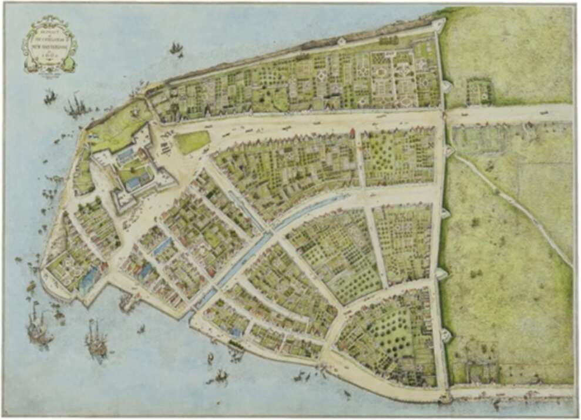

New Amsterdam in 1660, at the tip of Manhattan Island. The settlement’s protective wall is today paved over by Wall Street. A few days later, the panic began. Some speculators realised that the share prices were totally unrealistic and unsustainable. They figured that they had better sell while stock prices were at their peak. As the supply of shares available rose, their price declined. When other investors saw the price going down, they also wanted to get out quick. The stock price plummeted further, setting off an avalanche. In order to stabilise prices, the central bank of France - at the direction of its governor, John Law — bought up Mississippi shares, but it could not do so for ever. Eventually it ran out of money. When this happened, the controller-general of finances, the same John Law, authorised the printing of more money in order to buy additional shares. This placed the entire French financial system inside the bubble. And not even this financial wizardry could save the day. The price of Mississippi shares dropped from 10,000 livres back to 1,000 livres, and then collapsed completely, and the shares lost every sou of their worth. By now, the central bank and the royal treasury owned a huge amount of worthless stock and had no money. The big
